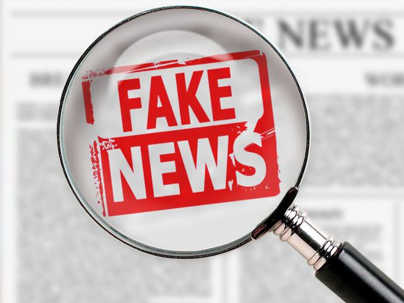

A divulgação de notícias falsas, conhecidas como fake news, pode interferir negativamente em vários setores da sociedade, como política, saúde e segurança.
Apesar de parecer recente, o termo fake news, ou notícia falsa, em português, é mais antigo do que aparenta. Segundo o dicionário Merriam-Webster, essa expressão é usada desde o final do século XIX. O termo é em inglês, mas se tornou popular em todo o mundo para denominar informações falsas que são publicadas, principalmente, em redes sociais.
O que significa fake news?
Notícias falsas (sendo também muito comum o uso do termo em inglês fake news) são uma forma de imprensa marrom que consiste na distribuição deliberada de desinformação ou boatos via jornal impresso, televisão, rádio, ou ainda online, como nas mídias sociais.Este tipo de notícia é escrito e publicado com a intenção de enganar, a fim de se obter ganhos financeiros ou políticos, muitas vezes com manchetes sensacionalistas, exageradas ou evidentemente falsas para chamar a atenção.
Aprenda mais sobre Fake News:
como identificar notícias falsas sobre saúde?
- Procure pela fonte e autoria da notícia
- Sempre verifique a veracidade dos fatos
- Também desconfie de imagens
Caso você esteja desconfiando de uma informação que recebeu, a primeira coisa a se fazer é: procurar pela fonte e autoria daquela notícia. Se você recebeu aquela notícia de um familiar ou amigo, vale também perguntar: por onde aquela pessoa recebeu aquela informação.
Os fatos precisam ser verificáveis. Então, procurar pelos fatos da informação no Google e verificar se diversas fontes dizem a mesma coisa sobre aquela informação, também é outra maneira de checar se uma notícia é verdadeira.
Nem tudo que as imagens mostram também é verdade. Mas, sabia que você pode checar a origem de uma imagem no Google? A ferramenta de pesquisa tem uma função de busca por imagem. Você pode acessá-la clicando aqui

Cuidados básicos
- Encaminhamentos – Uma característica de informações falsas é que elas são compartilhadas em diversos locais de uma só vez. Nos apps de bate-papo, como WhatsApp e Telegram, mensagens desse tipo aparecem com um alerta de encaminhamento frequente.
- Fontes – Procure saber quem produziu as informações que chegam até você e verifique se de fato aquela origem é verídica. Por exemplo: se compartilharam que um tratamento para a cura da aids teria sido bem-sucedido, procure saber onde foi feita essa descoberta, em que veículos de imprensa essa notícia repercutiu, que laboratório ou universidade chegou a esse feito. Notícias com alto grau de interesse público sempre são amplamente divulgadas.
- Confirmações – É importante pesquisar sobre o assunto em questão antes de tomá-lo como verdade. Faça isso consultando sites de referência, como o do Ministério da Saúde, dos conselhos de medicina e suas especialidades, de hospitais de referência e de veículos de comunicação tradicionais.
- Denuncie – Você pode ajudar a coibir a disseminação de mentiras pela internet. Sempre que ver alguma notícia falsa circulando, denuncie a publicação e o perfil em questão para os administradores do site ou da rede social, cobrando providências dessas empresas. Havendo a possibilidade de ser algo criminoso, acione a polícia e os demais órgãos competentes. No caso dos grupos de WhatsApp ou Telegram, além das explicações de quem compartilha inverdades, também se pode cobrar os administradores dos grupos.